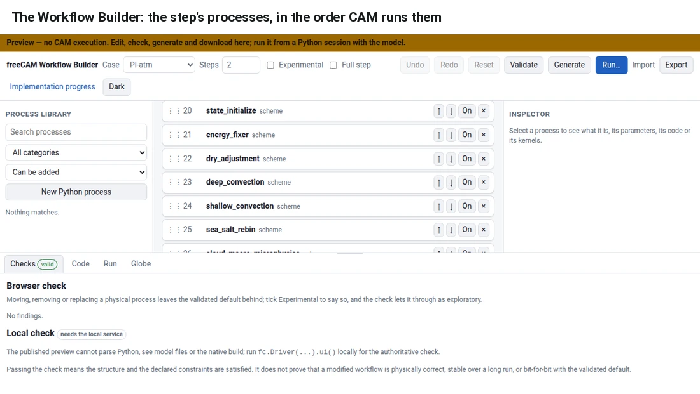

Manual
This manual describes how to use freeCAM. Specifically, it covers ➊ reading the live state of a running model from a notebook, ➋ editing and watching the model in the browser with the Workflow Builder, ➌ the layers of one MPI rank and the classes in each, and ➍ the Python classes of the physics processes and the kernels each one can replace.
Reading the live state

Every CAM field is exposed as a distributed NumPy array. Specifically, a notebook can request ➊ statistics over all ranks, ➋ the columns owned by one rank, or ➌ a plot, all without stopping the model. Figure 1 shows rank 0's mean profiles of six fields, read from the running model.
driver.cam.state.T.stats(rank="global")
driver.cam.state.plot(rank=0,
variables=('T', 'u', 'v', 'q', 'omega', 'pmid'))
Editing and watching the model in the browser
The Workflow Builder is a browser page attached to the same model. In it, a user can edit the step, generate the corresponding freeCAM code, run it, and watch the state on a globe. The page is launched from Python, and the ranks keep each step's state in memory so that the globe can display it.
import freecam as fc
driver = fc.Driver(case="PI-atm", nsteps=1488, # one model month
record_state={"store": "memory", "keep_steps": 1500})
ui = driver.ui(port=8793)
print(ui.url) # open it; Run starts the model, the Globe tab follows it
From a shell, uv run python -i -c '...' keeps the page up. Note that without record_state, ui() still keeps the state of the last 1000 steps in memory.
Reordering the step and generating its code
Every process in the step can be moved, switched off, removed, or replaced. A change that departs from the validated default is marked experimental, since only the default has been checked bit-for-bit against the original. Generate then writes the step as freeCAM code in one of three forms: ➊ a complete program, ➋ a notebook, or ➌ the setup for a running driver.

The layers
One rank of the model, top to bottom. Control flows down, and only down: the Fortran never calls back into Python. A pause hands control back to Python and waits for a resume.
fc.Driver / fc.FreeCAM: prepares an isolated run directory; the first live operation launches one persistent MPI session.src/freecam/pi_cam/facade.py--python-stages, --segmented-original-kernels, --disable-actions, --stage-execution.src/freecam/pi_cam/cli.pyfc.Physics can be inserted without rebuilding CAM. Installing a stage class disables the original action and puts the class's tend() in its slot.
src/freecam/pi_cam/plan.py, runtime_processes.py, model/python_processes.pyradiation_tend and resumes after it; the class runs between the halves over the radt runner.src/freecam/physics/radiation.pystage7 runner with mmacro_pcond and micro_mg_tend.src/freecam/physics/cloud_macro_microphysics.pyrun_action(): no runner, no views, no copies. This is the default path and costs about one percent.SegmentedStage.run() drives the image's runner:
createonce, thenstartwith the replacement mask- on NEEDS_KERNEL:
framegives the paused call's arguments where they live - the model answers the batch, or
originalruns the very call for a gate - write-back into the live lanes of every output, then
resume - repeat until DONE, once per chunk this rank owns
--check.native/pi_cam/pausable/*.yaml, tools/pi_cam_pausable.pypublic statement each, naming the private variables a hoisted driver reads; the patched module is compiled for its interface only and the oracle's object is linked.control patches 0044 to 0048The classes and their kernels
Every pause has been answered by the original kernel through Python in a 512-rank, 50-step run compared with the pinned iCESM reference with no numerical tolerance. The pause count is per 50 steps; radiation runs every other step, wet deposition pauses for every mode, phase and species.
Table 1. The Python classes, the runners behind them, and the kernels each one pauses at, with the 50-step gate that validated every pause.
| Class | Action | Runner | Kernels (frame slots) | Pauses / 50 steps | Gate |
|---|---|---|---|---|---|
| DryAdjustment | cam_run1.dry_adjustment | dadadj | dadadj (7) | 100 | bit-for-bit |
| ShallowConvection | cam_run1.shallow_convection | shcu | compute_uwshcu_inv (54) | 100 | bit-for-bit |
| DeepConvection | cam_run1.deep_convection | zmdeep | zm_convr (70), zm_conv_evap (22), momtran (25) | 100 each | bit-for-bit |
| ConvectiveTracerTransport | cam_run1.convective_tracer_transport_leaf | zmtran | convtran (21), transporting with the mass fluxes DeepConvection left in the module's own arrays | 100 | bit-for-bit |
| CloudMacroMicrophysics | cam_run1.cloud_macro_microphysics | stage7 | mmacro_pcond, micro_mg_tend (from their reviewed contracts) | 100 each | bit-for-bit |
| AerosolWetDeposition | cam_run1.aerosol_wet_deposition_leaf | awet | wetdepa_v2 (32), two call sites | 3000 | bit-for-bit |
| Radiation | cam_run1.radiation (split) | radt | rad_rrtmg_sw (58), rad_rrtmg_lw (35) | 50 each | bit-for-bit |
| ChemistryTendencies | cam_run2.chemistry_tendencies_leaf | chem | gas_phase_chemdr (34), the whole gas-phase driver as one kernel | 100 | bit-for-bit |
| VerticalDiffusion | cam_run2.vertical_diffusion | vdiff | compute_tms (14), compute_eddy_diff (55), compute_vdiff (42) at two call sites | 100, 100, 200 | bit-for-bit |
| AerosolDryDeposition | cam_run2.aerosol_dry_deposition_leaf | adry | modal_aero_depvel_part (13), four call sites | 800 | bit-for-bit |
| GravityWaveDrag | cam_run2.gravity_wave_drag | gwd | gw_drag_prof (33), the band and the pressure coordinates served by component | 100 | bit-for-bit |
| EnergyFixer | cam_run1.energy_fixer | none | no kernel: check_energy_fix allocates its tendency inside the call and reads private module state | 0 | owned whole |
| 11 InertStages | rayleigh_friction, charge_neutrality, qbo_relaxation, ion_drag, sea_salt_rebin, modal_aerosol_preparation, carma (3), tracer and age-of-air tendencies | none | no kernel: the bodies do nothing in this configuration | 0 | disabled at once, bit-for-bit |
One further run installed all eleven classes and paused every one of the 17 kernels in the same 50 steps (5300 pauses): bit-for-bit. The nine numerical actions that are disabled by default are alternate forms of the same work (a parent stage whose leaves run, or a leaf whose stage runs whole) and are owned through them.